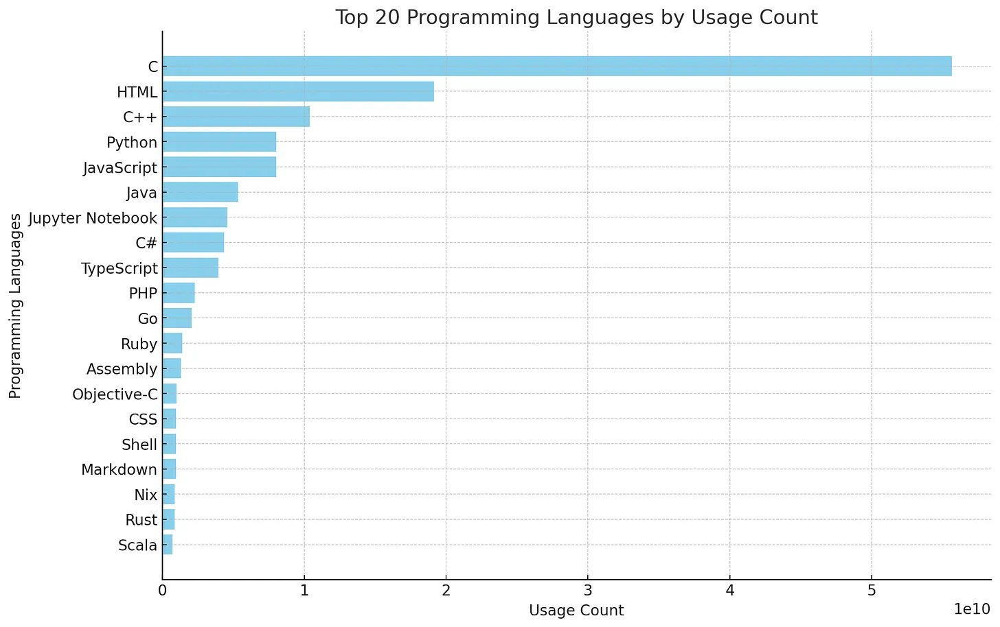

We’re thinking about building a product for developers that enables them to build applications that operate on encrypted data via homomorphic encryption. We think developers have seen enough data leaks to want a product like this, but we’re worried we’re wrong.
Even if we’re right, we’re worried about finding specific devs who can be early adopters. Where do these devs live? What languages do they use? What kind of companies do they work for?
To assuage these worries, we analyzed data from ~6000 Github profiles listed in a 2021 open letter to Apple expressing concern over their proposed content scanning technology they nearly introduced to iCloud. We also ran a promoted Twitter poll with 39 responses.
Here are our results.
Do B2C devs care more about privacy than B2B ones?
Trying to get a sense of developer attitudes about data privacy. Please pick the option that best fills in the blanks in the sentence below:
— Matt Dupree (@philosohacker) August 1, 2024
I am building a (B2B | B2C) product and am (happy | unhappy) with our privacy practices.
e.g., pick choice 1 if you're working on a…
B2C devs seem unhappier about their company’s privacy practices than B2B devs. Is the difference statistically significant? The p-value, according to R’s prop.test, function is 0.054171. Good enough for me.
Where do privacy-conscious devs tend to live?
Most of the devs who signed the letter are in the USA. Good. We are too.
What languages do privacy-conscious devs tend to use?

“Usage Count” on the x-axis here is 10s of trillions of bytes written in the programming language across the public repositories of all the users who signed the letter. Some signatories had no public repositories. Some didn’t write as much code. We think they are appropriately penalized in this measure and are comfortable saying, for example, that we’re better off starting with C(++), Python, and JS devs than Rust and Scala devs.
Data analysis code
I grabbed the list of Github profiles by executing a little JS2 on the Apple open letter website and pasting the result into a json file. Here’s the node code written to hit the Github API, and here’s the ChatGPT convo that generated python and data vis code. The code looks reasonable to me, but happy to hear critiques of the analysis and code given that I’ve been a CEO instead of a engineer/data practitioner for a couple years now and given that these days I can barely turn on a computer without asking my CTO for help.
Conclusion
Based on these results, seems like we’d be well served by start talking with C(++), JS, and Python devs at B2C companies.
If you’re a dev unsatisfied with your company’s privacy practices or if you’re founder looking to assuage security concerns of prospects by getting a SOC2 report, shoot me an email. I’d love to hear how you think about privacy and security. This is not a veiled attempt at starting a sales conversation. We have nothing to sell. We’re just trying to understand how founders and devs think about the problem.
-
Don’t be fooled by the fact that the same number of people are unhappy with the privacy practices across B2B vs. B2C. What matters is the proportion. The function call forces us to consider this: prop.test(c(16, 3), c(26, 13)) ↩︎
-
Here it is:
Array.from($$('#individuals > li > a')).map(a => a.href)↩︎